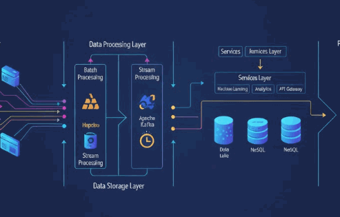

Available
Building Conversational AI with LLMs and Agents
Design and build conversational AI systems using modern LLM workflows, agentic orchestration, and evaluation-driven iteration.
Current and in-development courses in the Hands-On AI Science Series.
Available
Design and build conversational AI systems using modern LLM workflows, agentic orchestration, and evaluation-driven iteration.
Available
Apply foundation and generative models to practical computer vision tasks, from data handling to task-specific adaptation and deployment.
Under Development
Develop AI methods for sequential decision-making and temporal modeling across time series, reinforcement learning, and adaptive systems.

Under Development
Engineer scalable AI pipelines with distributed processing patterns, cloud-native workflows, and reliability-aware production architecture.